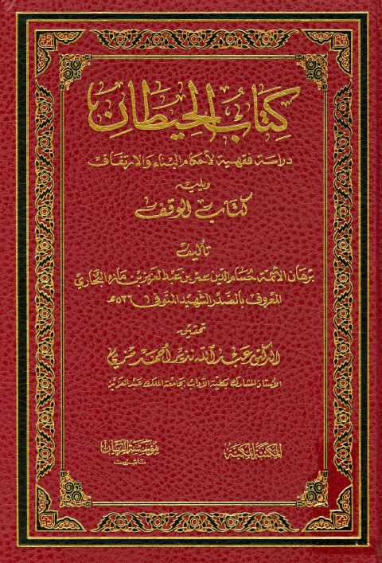
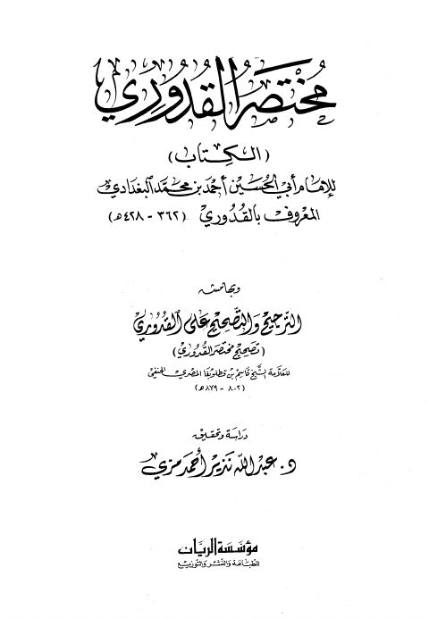

كتاب الحيطان دراسة فقهية لأحكام البناء والارتفاق ويليه كتاب الوقف كتاب الحيطان دراسة فقهية لأحكام البناء والارتفاق ويليه كتاب الوقف حسام الدين عمر بن عبد العزيز بن مازه البخاري المعروف بالصدر الشهيد
مختصر القدوري وبهامشه الترجيح والتصحيح على القدوري مختصر القدوري وبهامشه الترجيح والتصحيح على القدوري أحمد بن محمد القدوري البغدادي